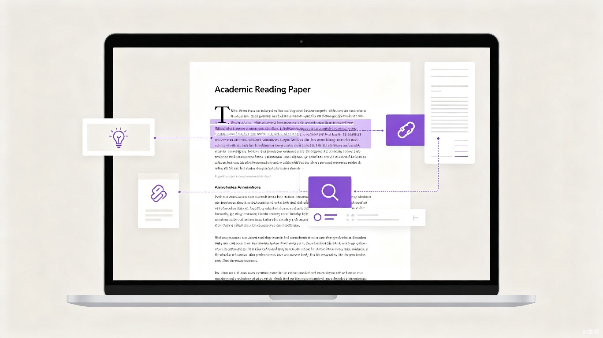

不是翻译工具，而是阅读脚手架 — 帮你在原文语境中逐步深入理解外文文献，让每一篇论文都从"读不懂"变成"读得透"

每个科研人、大学生、职场人面对英文论文时，都卡在同一个两难选择里：要么全文翻译读译文，要么保留原文查生词。两条路都不通。
AI翻译把整篇论文变成中文，但专业术语被误译，同一个英文概念在不同学科被翻译成互不关联的中文词汇。原文的论证逻辑、学术语感全部丢失，读完之后脑子里只剩一片模糊的印象。
划词翻译虽然保留了原文，但频繁切换打断阅读连贯性。逐段查译后，"读懂了每句话却忘了全文讲什么"是常态。更关键的是，语言障碍只是表层问题，论文的结构逻辑和背景知识才是真正的理解瓶颈。
翻译只解决了一层障碍（语言层），而读者面对的是三层障碍：语言层（词汇语法）、结构层（论证逻辑）、知识层（学科背景）。DeepRead 覆盖全部三层，且每一层都保持原文可见。
DeepRead 的核心理念是渐进式理解（Progressive Comprehension）：AI像阅读脚手架一样，在用户遇到障碍时才出现辅助，而不是直接把整面墙推倒重建。
在原文语境中提供术语解释、长难句语法拆解、同义改写，帮用户理解"这句话为什么这样写"，而不是简单替换成中文。
AI 自动生成论文结构图，标注每个段落的功能角色（背景/方法/结果/讨论），让读者始终知道自己在论文的哪个位置，不会迷失在细节里。
AI 提取论文核心概念并构建知识网络，支持跨文献关联推荐和追问对话，帮读者把单篇论文放到更大的学科图景中理解。
市面上的工具要么帮你翻译，要么帮你问答，但没有人帮你真正读懂一篇论文。
| 维度 | 沉浸式翻译 / 知云 | ChatPDF / Explainpaper | DeepRead |
|---|---|---|---|
| 核心哲学 | 翻译替代阅读 | 问答替代阅读 | 辅助阅读，不替代 |
| 原文地位 | 被译文覆盖或并列 | 上传后作为知识库 | 始终处于视觉中心 |
| 交互方式 | 划词 → 翻译 | 提问 → 回答 | 点击 → 渐进式展开辅助 |
| 结构感知 | 无 | 无 | 始终显示论文结构 + 当前位置 |
| 知识管理 | 无 | 单篇对话 | 跨文献概念网络 + 笔记汇聚 |
PDF 原文完整渲染，公式、图表、双栏布局不丢失。所有 DeepRead AI 辅助以浮动卡片形式出现，不破坏原文排版。
点击任意专业术语，DeepRead AI 根据当前论文的上下文给出该术语的具体含义，而非字典释义。同一个词在不同论文中可能有不同的解释。
DeepRead AI 自动提取论文的 IMRaD 结构，生成可折叠的侧边栏导航树。标注每个段落的功能（背景/方法/结果/讨论），实时显示阅读位置。
选中复杂句子后，DeepRead AI 拆解语法结构：标注主谓宾、定语从句、状语修饰关系，用层级缩进展示句子骨架。
针对论文任意段落提问："作者为什么选这个方法？""Table 2 和 Table 3 的差异说明了什么？"DeepRead AI 基于论文全文内容回答。
标注的内容、DeepRead AI 的解释、你的疑问自动汇聚为结构化笔记，支持按论文/概念/日期检索，导出为 Markdown。
每天需要精读 3-5 篇英文文献，当前靠划词翻译 + 手写笔记，效率低且容易迷失在论文细节中。需要既能保持学术严谨性，又能提升阅读速度的工具。
写毕业论文或课程论文时需要引用英文文献，但英文阅读能力有限，全文翻译又担心学术性不足。需要一个"学习型"的阅读工具，在辅助理解的同时提升英语学术阅读能力。
需要快速筛选大量文献并深入理解核心论文。当前用 ChatPDF 做快速摘要筛选，但精读阶段缺乏好用的工具。需要一个从"筛选"到"精读"无缝衔接的阅读环境。
需要阅读本领域之外的前沿文献，缺乏学科背景知识使得阅读困难加倍。AI 的知识层辅助（概念解释、跨文献关联）能显著降低跨学科阅读的门槛。
"渐进式理解"不只是效率工具，它改变的是人与知识的关系——从被动接收翻译结果，到主动构建对知识的理解。长期使用 DeepRead，用户的英文学术阅读能力会持续提升，而不是越来越依赖翻译。
相比传统"查字典+手写笔记"的阅读方式，DeepRead 将单篇论文的精读时间从平均 4 小时缩短至 2 小时，同时理解深度不降反升——因为结构导航让读者不再迷失在细节中。
与传统翻译工具"用得越多越依赖"不同，DeepRead 的渐进式设计让用户逐步减少对辅助的依赖。AI 始终在原文语境中提供帮助，用户在阅读中自然积累学术词汇和阅读策略，阅读能力持续提升。
DeepRead 采用 Web 应用形态（网站），核心基于现代浏览器能力 + AI 大模型 API，用户无需安装。
PDF 上传 + 原文渲染 | 点击查词（语境化术语解释） | 段落功能标注 + 摘要 | 论文结构侧边栏导航 | 阅读进度追踪
长难句语法拆解 | 论证链路可视化 | AI 追问对话 | 阅读笔记系统 | 知识概念网络 | 用户账户与历史记录
跨文献关联推荐 | 多人协作标注 | 导入文献管理器（Zotero 集成） | 移动端适配 | 完整商业计划